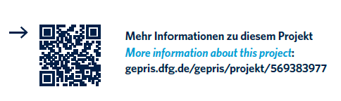

Research
projects.
Selected projects spanning turbulence, flow control, experimental diagnostics and artificial intelligence.
SPADE-AIM
Shear-flow Prediction and Drag Estimation using AI-driven Methodology
The DFG project SPADE-AIM, successfully secured by Dr.-Ing. Gazi Hasanuzzaman in 2025, exemplifies the ongoing support for early-career researchers at BTU—from his master’s thesis through to his first independently acquired externally funded project. Hasanuzzaman was a fellow of the Graduate Research School (GRS) cluster “Stochastic Methods for Flow and Transport Processes,” which ran from 2016 to 2019. As part of his doctoral research, he helped develop this research direction in aerospace engineering. The DFG project integrates state-of-the-art aerodynamic measurements with machine learning to develop predictive models for otherwise inaccessible data.
Various machine-learning models will be evaluated through conditional screening, after which the most suitable model will be developed to accurately predict flow-velocity data under different upstream boundary conditions and at high Reynolds numbers.
Project partners:
– BTU, Chair of Aerodynamics and Fluid Mechanics
– KTH Royal Institute of Technology, Department of Engineering Mechanics
– Coordinator: Dr.-Ing. Gazi Hasanuzzaman (BTU)

Uniform micro-blowing
Active modification of turbulent boundary layers
Experimental investigation of uniform wall-normal blowing and its influence on the near-wall region, turbulent structures and skin-friction drag.
TBL / BLOWING / EXPERIMENTDATIV
Data acquisition and open experimental sensing
Development and application of experimental sensor and data-acquisition concepts for modern fluid-mechanics research.
SENSORS / DATA / OPEN SCIENCEInternational research
Collaborative experimental fluid mechanics
Research collaborations with academic and research institutions including DLR, HZDR, LMFL Lille and the Vinuesa Lab at KTH.
COLLABORATION / TBL / DATA